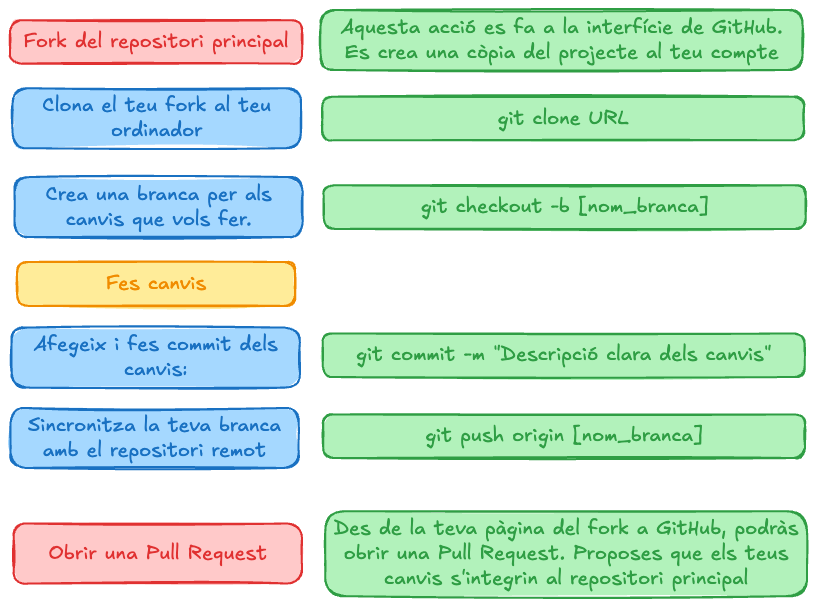
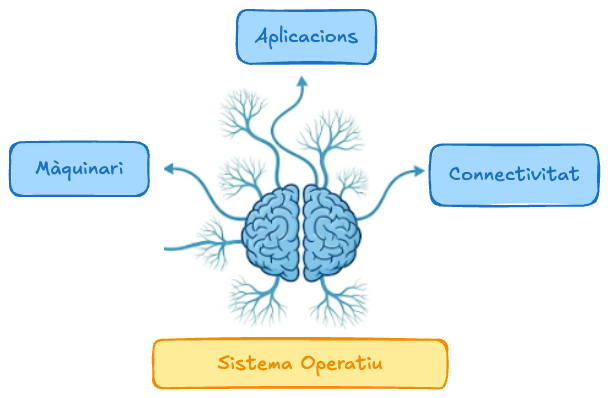
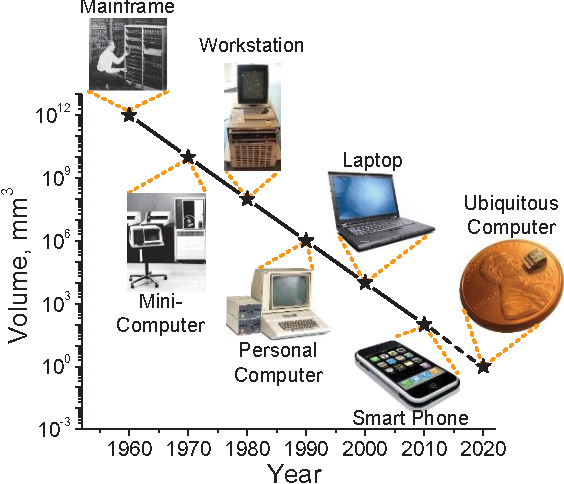
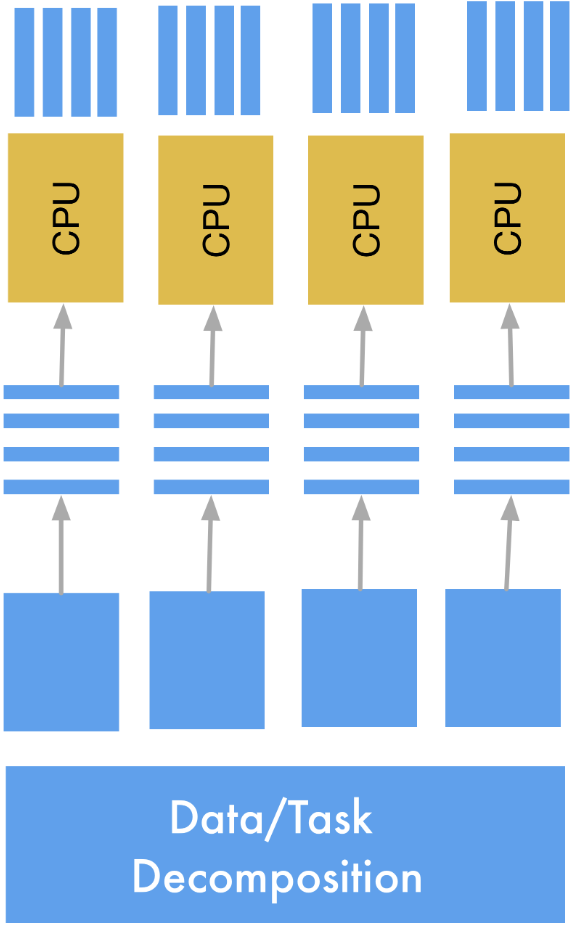
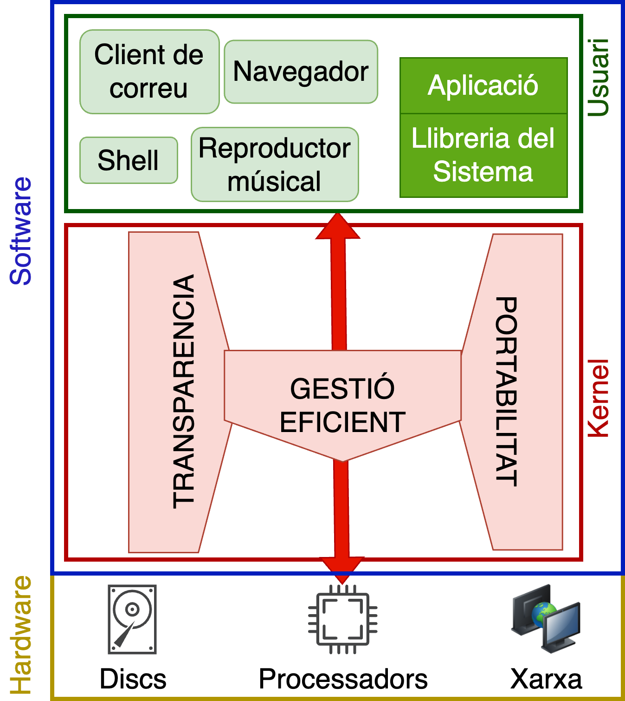
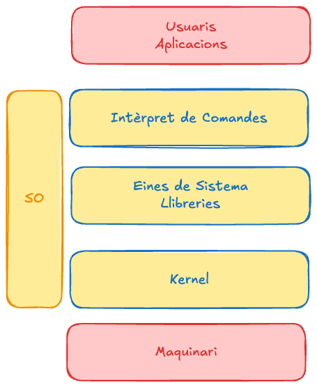
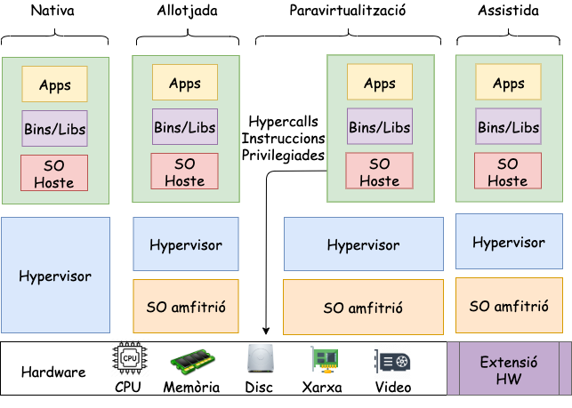
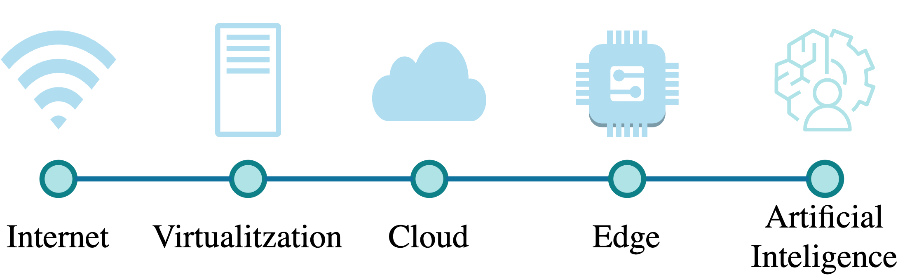

Introducció
Unitat 1 · Sistemes Operatius (SO)
Presentacions
Qui soc?
Currículum
- Enginyer i Doctor en Informàtica per la UdL.
Docència
- Professor agregat a la UdL des de 2019.
- Sistemes Operatius (GTIDIC, GEI).
- Administració de Sistemes (GTIDIC, GEI).
- Desenvolupament d’Aplicacions per a dispositus mòvils (GTIDIC).
- Cloud Compunting (Master in Health Data Science)
- High Performance Computing (Màster en Enginyeria Informàtica)
Recerca
- Membre del grup de recerca Grup de computació distribuïda des de 2012 (Universitat de Lleida).
- Membre del grup de recerca Essence: Data Engineering & Distributed Computing Systems des de 2022 (Universitat de Glasgow).
- Computació distribuïda: Cloud, Edge i Fog Computing.
- Camps d’aplicació: Salut electrònica i Energia.
Qui sou?
Què us ha portat fins aquí?
Introducció al curs
Presentació
Benvinguts a Sistemes Operatius

Coneixement previ (I)
Quin sistema operatiu utilitzeu/coneixeu?
Objectius (Globals)
- Entendre els Sistemes Operatius: Com estan dissenyats i quins components (o mòduls) els formen.
- Coneixer els seus serveis: Quines funcions proporcionen a usuaris i aplicacions.
- Aprendre a programar amb ells: Com utilitzar els serveis del sistema operatiu per crear aplicacions de manera eficient.
- Avaluar críticament les seves polítiques: Analitzar com el sistema operatiu gestiona els seus recursos, com la memòria, i comparar diferents mètodes per fer-ho.
Objectius (Específics)
- Conèixer els sistemes operatius Unix/Linux (en concret Debian).
- Interioritza les bases de programació C per millora les vostres habilitats en altres llenguatges.
- Desenvolupar programari a nivell de sistema en el llenguatge de programació C comprenent al mateix temps com funcionen els Sistemes Operatius basats en Unix.
Temari
- Introducció als Sistemes Operatius.
- Estructura dels Sistemes Operatius.
- Gestió i comunicació de processos i threads.
- Sincronització i Planificador de tasques.
- Interbloqueig.
- Gestió de Memòria.
- Scripting.
Metodologia
Basada en Aprenentatge SIGNIFICATIU, GUIAT i ACTIU.
- Sessions teòriques: S’introdueixen continguts teòrics de l’assignatura i als estudiants, i també s’hi discuteixen les implicacions pràctiques.
- Sessions pràctiques: sessions autoguiades de laboratori, sessions de live coding o resolució de problemes.
- Treball autònom: els estudiants han d’aplicar els coneixements adquirits a les sessions teòriques i pràctiques per acabar els problemes, laboratoris i projectes proposats. A més, han de realitzar les lectures dels apunts i consultar la bibliografia recomanada.
Les sessions teòriques i pràctiques estan combinades en les sessions de 3h de durada.
Avaluació
Criteris d’Avaluació
| Acr. | Activitat d’avaluació | Pes | Nota mínima | En grup | Recuperable |
|---|---|---|---|---|---|
| E1 | 1er Parcial | 35% | NO | NO | SI |
| E2 | 2on Parcial | 35% | NO | NO | SI |
| P | Pràctiques | 25% | NO | SI \(\leq 2\) | NO |
| Part | Seguiment i Participació | 5% | NO | NO | NO |
Exàmens
Els exàmens parcials (E1 i E2) són proves escrites que avaluen els coneixements teòrics i pràctics adquirits durant el curs.
- Són proves individuals i presencials.
- Es realitzaran en les dates establertes al calendari acadèmic.
- No es permet l’ús de cap dispositiu electrònic (telèfons mòbils, ordinadors portàtils o tauletes).
- Si es permet l’ús d’un resum de continguts, que ha de ser un document escrit a mà i no pot excedir una fulla DIN A4 (per davant i per darrere).
Recuperació
- Els parcials són recuperables mitjançant proves escrites addicionals que es realitzaran durant la setmana de recuperació.
- Si un estudiant necessita recuperar un únic parcial (E1 o E2), podrà fer una prova específica per a aquest parcial. La qualificació obtinguda en aquesta recuperació substituirà la nota del parcial corresponent.
- Si un estudiant necessita recuperar ambdós parcials, haurà de realitzar dues proves separades, una per a cada parcial (E1 i E2). Les qualificacions obtingudes en cadascuna d’aquestes proves de recuperació substituiran les notes originals dels parcials respectius.
- És important notar que no hi haurà un model d’examen unificat per a la recuperació; cada prova de recuperació se centrarà exclusivament en els continguts del parcial al qual correspon.
Pràctiques
- Les pràctiques de l’assignatura impliquen treball fora de l’aula i s’han de lliurar de forma estricta en les dates establertes.
- La seva avaluació es farà mitjançant rúbriques de correcció, que estaran disponibles per als estudiants amb antelació.
- El professorat pot entrevistar els estudiants per verificar l’autoria. Si es detecta que una activitat no ha estat realitzada per l’estudiant la seva qualificació serà 0.
- Qualsevol entrega fora del termini establert es considerarà no vàlida i es qualificarà amb un 0.
- Cadascuna pot tenir una ponderació específica indicada a la descripció de l’activitat.
- Aquestes pràctiques no són recuperables.
- Tot i ser activitats en grup, cada estudiant pot obtenir una nota diferent en funció de la seva participació i aportacions individuals al grup.
Seguiment i Participació
Rúbrica d’Avaluació
| Punts | Participació Presencial | Participació en Fòrums | Activitats Sessió |
|---|---|---|---|
| 10 | Contribucions excepcionals,enriqueix la discussió. | Líder en discussions, promou debat. | Qualitat excepcional, supera expectatives. |
| 9 | Comentaris rellevants, mostra comprensió, escolta activament. | Respostes significatives. | Alta qualitat, treball precís. |
| 8 | Contribucions regulars, interactua amb companys. | Publicacions rellevants, contribueix constructivament. | Compleix tots requisits amb precisió. |
| 7 | Participa amb una comprensió bàsica. | Compleix mínims, contribucions breus. | Qualitat inconsistent però acceptable. |
| 5-6 | Poca freqüència, comentaris superficials. | Publicacions rares, poc profundes. | Algunes activitats incompletes. |
| 1-4 | Només participa si se li demana. | Publicacions irrellevants. | Rarament completa activitats. |
| 0 | Evita participar, distret. | Publicacions fora de tema. | No lliura activitats. |
L’assistència passiva no es puntua.
Bonus 1
- Objectiu: Fomentar la reflexió i l’autoavaluació dels continguts treballats a classe.
- Metodologia: Cada setmana, els estudiants han de fer un commit al seu repositori d’apunts amb les notes de les sessions de teoria i pràctiques.
- Avaluació: Es valorarà la qualitat de les notes, la seva coherència i la seva relació amb els continguts treballats, així com les reflexions i opinions personals incloses.
- Per participar cal crear un repositori a Github (públic) i fer-me arribar l’enllaç.
Bonus 2
- Els materials són Open Source.
- Qualsevol estudiant pot detectar errors, millorar els materials o afegir continguts nous.
- S’avaluarà la quantitat i qualitat.

Normativa del curs
Gestió del curs
- Es demana que els estudiants arribin puntuals a les sessions. L’entrada tardana pot interrompre la dinàmica de la classe i el treball dels companys.
- Es demana que els estudiants respectin les normes de convivència i respecte mutu durant les sessions de classe. Això inclou evitar interrupcions innecessàries, escoltar activament als companys i al professor, i mantenir un ambient de treball positiu i constructiu.
Comunicació amb el professorat
- Intenteu comunicar-vos a través del correu electrònic i no per l’eina del campus virtual per assegurar una resposta més ràpida.
- Les sessions de tutoria es realitzaran de manera presencial o virtual, segons les necessitats dels estudiants. És important que els estudiants sol·licitin cita prèvia per a les tutories utilitzant el correu electrònic jordi.mateo@udl.cat indicant el motiu de la consulta i la disponibilitat horària i afegint l’assumpte [SO]: Sol·licitud de Tutoria.
Treball individual
- Cada estudiant és responsable de la seva pròpia feina i de com gestiona el seu temps.
- L’assistència a classe no és obligatòria.
- Cada alumne ha de presentar evidències pròpies del treball realitzat, encara que es col·labori en grup.
Ús de la IAG
- Pots utilitzar eines d’IAG per generar idees, entendre conceptes complexos o esbossar l’estructura inicial del teu codi o projecte. No obstant això, la implementació i la versió final han de ser sempre de la teva autoria.
- Està estrictament prohibit presentar codi o solucions generades directament per una IAG com a treball propi (és a dir, mitjançant un simple copiar i enganxar).
- Si incorpores material assistit per una IAG, has de declarar-ho explícitament. Això implica identificar clarament les seccions generades per IAG i proporcionar el prompt exacte utilitzat per crear-les.
L’incompliment d’aquestes directrius es considerarà una violació de la integritat acadèmica.
- Qualificació de zero en la tasca.
- Conseqüències disciplinàries que estableix la Normativa de Convivència de la UdL per frau acadèmic.
Eines necessàries
- Ordinador portàtil amb connexió a Internet.
- Es recomana portar el vostre propi ordinador per cursar l’assignatura.
- Si no disposeu d’ordinador, podreu utilitzar els ordinadors de la classe durant les sessions de laboratori.
- Distribucions Linux (Debian )
- És obligatori utilitzar la distribució Debian per a les pràctiques de laboratori.
- Software de virtualització (VMWare)
- Es recomana utilitzar VMWare, però podeu optar per altres opcions de virtualització. Heu de ser capaços d’adaptar el material al vostre programari de virtualització.
Programari necessari
Llenguatges de programació i compiladors
- C
- GCC
Eines de control de versions
IDE
- Visual Studio (Recomanat)
- Vi, Vim, NeoVim, Emacs, CLion, Eclipse …
Materials i Recursos
- Apunts de l’assignatura i materials proporcionats pel professor.
- Documentació oficial de les eines i tecnologies utilitzades.
- Fòrums tècnics a la xarxa com Stack Overflow, Reddit, etc.
- Llibres de referència en Sistemes Operatius:
Bones pràctiques
- DRY (Do not repeat yourself).
- Codi fàcil de reutilitzar.
- Testeja aviat, testeja sovint, testeja de forma automàtica.
- No assumeixis res, prova-ho.
- Utilitza assertions per prevenir l’impossible.
- Utilitza excepcions per problemes excepcionals.
- Estima l’ordre de complexitat dels teus algorismes.
- Utilitza patrons de disseny.
- Utilitza eines de control de versions.
Bibliografia recomanada
(per la vida… no pel curs)


Introducció a la temàtica
Societat actual
Què tenen en comú?
- Cotxe
- Rellotge
- Portàtil
- Rentadora
- Nevera
- Televisió
- …
Vivim en un gran sistema paral·lel i distribuït!

Món connectat
Avui en dia tothom parla de IoT, BigData, Cloud, AI, Blockchain, Metavers
- Microprocessador a tot arreu.
- Xarxes i Connectivitat.
- Serveis escalables, confiables i segurs.
- Gran volum de dades, Sensor i Digitalització.

La barrera que separa el món físic i el món virtual cada cop es mes estreta.
Què tenen en comú?
Una interfície (Sistema Operatiu) capaç d’integrar una gran diversitat de maquinari i programari i comunicar-se a través de la xarxa.

Llei de Bell

Llei de Moore

Què és un sistema informàtic?
Un sistema informàtic és la interconnexió d’elements de maquinari per exemple d’1 o més CPU, memòria i components E/S … Amb la finalitat d’executar programes i accions (en sèrie o de forma concurrent) per 1 o múltiples usuaris.


Gestió d’un sistema informàtic (I)
Imagineu que sou un sistema informàtic i us envien l’ordre de llegir un fitxer
- Quin és el procediment per fer aquesta acció?
- Engegar motor del disc.
- Buscar posició al disc a llegir (pista, cara, sector).
- Llegir.
- Apagar el motor.
- Quantes vegades com a usuaris d’un sistema informàtic llegiu un fitxer?
Moltes vegades…!
Complexitat sistemes informàtics (I)
Cada peça de hardware és diferent. \(\Rightarrow\) La complexitat per gestionar els recursos és molt elevada.
- Arquitectures diferents de processadors i també de generacions (x86, ARM, RISC-V, MIPS, PowerPC,…).
- Diferents tipus de memòries (RAM DDR3, DDR4, DDR5, NAND,…).
- Diferents tipus de discs (HDD, SSD, NVM…).
- Diferents dispositius entrada/sortida.
- Diferents entorns de xarxa.
… entre moltes altres …
Complexitat sistemes informàtics (III)
Tots els programes necessiten accedir a tot el hardware?
Per suposat que no! Això podria causar problemes de seguretat com:
- Pèrdua de confidencialitat: Accés no autoritzat a dades sensibles.
- Accés a informació restringida: Usuaris no autoritzats podrien veure dades privades.
- Denegació de serveis: Un programa podria bloquejar l’accés a recursos per a altres programes.
Què pot passar si un programa pot accedir a tota la RAM?
- Un programa de l’usuari Jordi amb accés a tota la RAM podria veure les dades del programa de l’usuari Pere.
- Si el programa falla, podria afectar tot el sistema i requerir un reinici.
Complexitat sistemes informàtics (IV)
Si un sistema informàtic no està ben dissenyat, un programa mal escrit pot fer fallar tot el sistema, per exemple:
Bucle infinit
Fork bomb
Què és un sistema operatiu?
Un sistema operatiu (SO) és una capa de software que permet la comunicació i la gestió del maquinari habilitant als usuaris l’execució de programes. El SO actua d’intermediari (interfície) entre els usuaris i el maquinari.

Què volen els programadors?
Una plataforma…
- per executar aplicacions.
- transparent per evitar la complexitat del hardware.
- eficient per utilitzar els recursos de forma òptima.
- portable per utilitzar-ho indepedentment del hardware.

Què ofereix el sistema operatiu?
Serveis
- Controlar/Gestionar usuaris i aplicacions.
- Gestionar la Memòria.
- Sistema de fitxers.
- Planificadors.
- Eines de xarxa.
Garanties
- Seguretat.
- Transparència.
- Eficiència.
- Portabilitat.
- Estabilitat al llarg del temps.

Com s’organitza el sistema operatiu?

Maquina virtual
És la visió que té l’usuari del sistema operatiu durant una sessió de treball.
Dualitat
El sistema operatiu divideix el programari que té tots els privilegis(kernel) del programari que no pot accedir a tots els recursos (programes, llibreries, intèrpret de comandes,…).
Què és una Màquina Virtual?
La virtualització presentar una visió abstracta dels recursos del sistema. Diversos processos creuen (tenen l’il·lusió) de disposar sempre d’un conjunt de recursos (màquinaria).
- Simplicitat Il·lusió de propietat de recursos
- Aïllament Els bugs es donen en un entorn virtual i no físic.
- Protecció Els processos no es poden fer mal entre ells.
- Portabilitat Podem executar a totes les plataformes.
Models de Virtualització d’alt nivell
Què és la Memòria Virtual?
- La memòria virtual permet que cada procés tingui la il·lusió que té accés exclusiu a l’espai complet d’adreces de memòria del processador.
- En realitat els processos utilitzen diferents regions de la memòria de l’ordinador, amb algunes regions traslladades al disc si no hi ha prou memòria per a tothom.
La unitat de gestió de memòria (MMU) d’un processador, que tradueix les adreces virtuals utilitzades pel programa en adreces físiques que representen ubicacions de memòria reals.
Quins són els rols SO? (I)
Il·lusionista
Ofereix una interfície simple i fàcil d’utilitzar per als recursos físics d’una màquina o sistema, ocultant la complexitat tècnica.
Exemple
Permet als usuaris utilitzar una impressora (hardware) sense conèixer els detalls tècnics d’aquesta impresora, com la interfície de comunicació, els controladors o els protocols de comunicació, disposem d’una funció (imprimir) que ens permet enviar un document a la impressora.
Quins són els rols SO? (II)
Il·lusionista
Proporciona una abstracció que permet a una aplicació tenir ús exclusiu dels recursos quan sigui necessari, sense interferències d’altres aplicacions.
Exemple
Permet utilitzar un programa de videoconferència que utilitza la càmera i el micròfon i ens garantitza que cap altre programa pugui utiltizar-los al mateix temps.
Quins són els rols SO? (III)
Il·lusionista
Oferir una il·lusió d’infinitat per als recursos de maquinari, assegurant que les aplicacions puguin continuar funcionant sense problemes.
Exemple
- Permet a un usuari tenir múltiples aplicacions obertes alhora, tot i que només una estigui en primer pla.
- Crea una il·lusió on cada procés creu que és propietari dels recursos hardware.
Quins són els rols SO? (V)
Àrbitre
Responsable de distribuir els recursos disponibles entre usuaris i aplicacions de manera eficient i justa.
Exemple
Un sistema amb múltiples usuaris, el temps de processador s’ha de repartir de manera equitativa entre tots els usuaris que executen aplicacions.
Quins són els rols SO? (VI)
Àrbitre
Garanteix la segregació i la protecció d’usuaris i aplicacions.
Exemple
Impedint que una aplicació bloquegi o afecti el funcionament d’altres aplicacions.
Quins són els rols SO? (VII)
Pega
Proporciona un conjunt de serveis i funcionalitats comunes que poden ser compartits i reutilitzats per diverses parts d’un sistema.
- Compartició: Simplifica \(\Rightarrow\) s’assumeixen sempre les mateixes primitives bàsiques.
- Reutilització: Evita torna a implementar funcionalitats comunes. Permet evolucionar de forma independent els components.
El Sistema de Fitxers
Un exemple de la funció de pega del sistema operatiu és el sistema de fitxers:
- Proporciona una interfície estàndard per a la creació, lectura, escriptura i eliminació de fitxers de format transparent (read, write, open, close, …)
- Ens permet implementar libc que proporciona funcions d’entrada/sortida d’alt nivell (fopen, fread, fwrite, fclose, …)
Anàlisi: Què fa aquest programa? (I)
Anàlisi: Què fa aquest programa? (II)

Anàlisi: Què fa aquest programa? (III)

Anàlisi: Què fa aquest programa? (IV)

Anàlisi: Què fa aquest programa? (V)
Anàlisi: Què fa aquest programa? (VI)
Anàlisi: Què fa aquest programa? (VII)
Anàlisi: Què fa aquest programa? (VIII)
Anàlisi: Què fa aquest programa? (IX)
Reptes en el disseny dels SO (I)
- Complexitat de la programació distribuïda (concurrent i paral·lela).
- Complexitat pel context (mòbil, IoT, servidors, centres de dades, …).
- Complexitat per la gran varietat d’elements de maquinari (heterogeneïtat).
- Complexitat en la portabilitat i la compatibilitat.
- Equilibri entre funcionalitat i rendiment.
- Equilibri entre rendiment i ús d’energia.
Reptes en el disseny dels SO (II)
- Maximitzar la fiabilitat: Els sistemes han de fer el que estan dissenyats per fer en tots els casos, fins i tot en cas d’errors inesperats.
- Maximitzar la disponibilitat: Els sistemes han d’estar disponibles per a l’ús quan els usuaris ho necessiten, minimitzant el temps d’aturada i reparació causat per fallades.
- Seguretat: Els sistemes han de protegir-se contra accions malicioses i accidents involuntaris.
Exemples de Disseny SO (I)
Vehicle
Un vehicle autònom ha de ser segur per als passatgers i per a la gent que hi ha al seu voltant. Ha de garantir que el vehicle no es pugui controlar de forma remota per un atacant. També ha de ser tolerant a fallades i recuperar-se d’errors sense posar en perill la seguretat dels passatgers.
Reptes en el disseny dels so (III)
- Escalables: Els sistemes han de funcionar bé quan s’afegeixen recursos (usuaris, processos, …) o quan es redueixen.
- Mantenibles: Els sistemes han de ser fàcils de mantenir i evolucionar al llarg del temps.
Exemples de Disseny SO (I)
Telèfon mòbil
- Escalable perquè el nombre d’usuaris pot augmentar molt ràpidament.
- Mantenible perquè els usuaris esperen actualitzacions periòdiques del sistema operatiu.
- A més a més, aquestes actualitzacions s’han de poder instal·lar de forma transparent i sense afectar el funcionament del telèfon.
Per què estudiar SO? (I)
- Són la base dels sistemes informàtics. (IoT, Servidors, Mòbils, PC, …).
- Ens permeten entendre com funciona realment un sistema informàtic.
- Els conceptes són aplicables a altres sistemes i problemes quotidians (planificació de tasques).
- Optimitzar el rendiment de les aplicacions.
- Compendre les vulnerabilitats, proteccions i mitigacions de riscos de seguretat.
Per què estudiar SO? (II)
La comprensió en les decisions de disseny dels sistemes operatius i el raonament sobre els pros/contra us permetrà rescatar idees obsoletes que poden ser útils en el futur dels nous sistemes informàtics.
Conclusions
- Els sistemes operatius estan presents en tots els dispositius que fem servir.
- El disseny es complex i requereix integrar dispositius diferents (forma,espai,temps).
- Ens proporciones una il·lusió d’una màquina virtual infinita.
- És il·lusionista, árbrit i proporciona un conjunt de serveis comuns per permetre la interacció entre programari i maquinari.
- Té cura del rendiment, seguretat, portabilitat i fiabilitat.
Això és tot per avui
Preguntes?
TAKE HOME MESSAGE
Els sistemes operatius ajuden als programadors a desenvolupar programari robust de forma independent del maquinari.


Unitat 1 · Sistemes Operatius (SO) 🏠